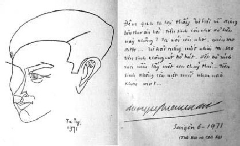

Tên: Phí Ích Nghiễm. Bút hiệu: Dương Nghiễm Mậu. Sinh ngày: 19-11-1936 tại Hà Đông, Bắc Việt. Viết văn từ 1955. Chủ trương nhà xuất bản Văn Xã.

Dương Nghiễm Mậu và thủ bút
Tác phẩm:
1. Cũng đành, nhà xuất bản Văn Nghệ 1963, Văn Xã tái bản 1966
2. Gia tài người mẹ, nhà xuất bản Văn Nghệ 1964, Văn Xã tái bản 1966
3. Đêm, nhà xuất bản Giao Điểm 1965
4. Đêm tóc rối, nhà xuất bản Thời Mới 1965
5. Tuổi nước độc, nhà xuất bản Văn 1966
6. Đôi mắt trên trời, nhà xuất bản Giao Điểm 1966
7. Sợi tóc tìm thấy, nhà xuất bản Những Tác Phẩm Hay 1966
8. Nhan sắc, nhà xuất bản An Tiêm 1966, Văn Xã tái bản 1969
9. Phấn đấu, nhà xuất bản Văn 1966
10. Kinh cầu nguyện, nhà xuất bản Văn Xã 1967
11. Gào thét, nhà xuất bản Văn Uyển 1968
12. Ngày lạ mặt, nhà xuất bản Giao Điểm 1968
13. Địa ngục có thật, nhà xuất bản Văn Xã 1969
14. Nga đạn, nhà xuất bản Tân Văn 1970
15. Quê người, nhà xuất bản Văn Xã 1970
16. Cái chết của, nhà xuất bản Văn Xã 1971
Đã cộng tác với: Sáng Tạo, Thế Kỷ 20, Văn, Văn Nghệ (Chí) và Tin Sáng (báo) v.v…
Dương Nghiễm Mậu và tuổi trẻ cô đơn
Que l’homme est né pour le bonheur.
André Gide (1869-1951)
Con người sinh ra để hưởng hạnh phúc.
Dương Nghiễm Mậu xuất hiện trên văn đàn miền Nam cách đây ngoài 10 năm, như một chứng tích. Cái chứng tích đó là nỗi bơ vơ của tuổi trẻ, của một thế hệ tuổi trẻ đang sống giữa cuộc sống không thuộc về mình. Cái tuổi trẻ nào đó được tô hồng trong những dạ hội, dưới mái đại học, hay rong chơi quanh năm với bốn mùa tình tự, đều ở ngoài tầm tay của Dương Nghiễm Mậu. Cuộc sống đối với Mậu là cái gì quá khe khắt, quá cứng rắn và từ đó mỗi suy nghĩ, mỗi hành động hình như, ít nhiều gì cũng để chống đối cuộc đời. Những xấu xa, ti tiện, lòng ganh ghét và đố kị thấp hèn, trộn lẫn với tình thương yêu con người làm giọng văn của Dương Nghiễm Mậu vừa phẫn nộ vừa chua xót.
Con người sinh ra đời không phải để gánh chịu nhục nhằn và cái xấu. Nhưng cuộc đời có mặt không phải là thiên đường, nên con người vẫn phải cúi đầu chấp nhận những gì do nó đưa lại cả xấu lẫn tốt. Con người tính vốn thiện từ thuở lọt lòng, nhưng càng sống, càng tranh đấu để cuộc sống được tốt đẹp hơn lên, con người lại vô tình làm nó xấu đi, vì lòng ích kỷ và tinh thần chiếm đoạt, tư hữu.
Cái ý thức tốt hướng vào điều thiện cũng như việc đề cao lương tri chỉ còn là những danh từ trống rỗng, giữa một xã hội xáo trộn vì chiến tranh quá lâu, giữa những ngộ nhận từ kẻ này qua kẻ khác. Dương Nghiễm Mậu không phải vô tình hay vô cớ khi đặt vấn đề thân phận con người, nhất là tuổi trẻ, trong phạm trù sinh hoạt thực tế với cục bướu quá to, lông lá xồm xoàm, tượng trưng cho nỗi băn khoăn, ám ảnh của nhà văn đối với một xã hội thối nát, bất công đang bám vào da thịt mình làm bứt rứt, khó chịu. Cục bướu đó, sự thực, mỗi con người đều phải gánh chịu suốt đời, chỉ có khác, ở mỗi người nó mọc ra ở mỗi chỗ, tuỳ theo cung số!… Cục “bướu quá to” đã làm khổ Dương Nghiễm Mậu, với mặc cảm xấu xa, vì nó mà người yêu từ bỏ, xã hội khinh khi.
Nó hiện diện như một hình phạt, dù con người muốn cắt bỏ nó, hoặc tự huỷ mình cho thoát nợ, nhưng vẫn không xong, vì nếu mọi việc ở đời đều có thể giải quyết dễ dàng như vậy thì làm gì còn cuộc sống nữa? Bởi vậy, con người được sinh ra, dưới sự an bài nào đó, phải chấp nhận đời sống và luật sống là có thực. Y học và văn minh cũng chẳng giúp ích gì được, một khi căn bệnh không nằm trong bệnh lý thông thường, mà nó biến hoá khôn lường giữa tâm linh để tàn phá, để giết dần đời sống, làm lụi tàn hy vọng.
Sinh ra và lớn lên trong một xã hội bị phân hoá vì chính trị và đời sống bấp bênh do cuộc chiến tạo nên, mỗi số phận trai trẻ như phập phồng, khắc khoải, chờ đợi một cái gì đó, có thể là những hạt giống tốt, cũng có thể là loài cỏ dại ăn hết chất màu của mảnh vườn mới bón. Từ phẫn uất, Dương Nghiễm Mậu đi vào chán nản khi biết rằng thân phận mình đã bị điểm danh, nghĩa là đã được định đoạt, Mậu không có quyền lựa chọn. Một khi con người không có quyền lựa chọn cho đời mình hướng đi, thì một, phải dứt khoát với nó, hai, phải buông trôi thân phận như dòng nước nhỏ chảy len lách vô tri dưới một khe lạch không tên, cho đến lúc nhạt nhoà tan biến vào đại dương. Dương Nghiễm Mậu, tuy không có quyền chọn lựa hướng đi nhưng cũng chẳng sẵn sàng làm một dòng nước nhỏ, nên chấp nhận sự có mặt của mình trước cuộc sống với một thế đứng riêng biệt.
Những năm cô đơn của tuổi trẻ mà Mậu đem theo là nỗi cô đơn bi thảm trước một chứng tích đã có đấy, đã hình thành như thế từ lâu. Mậu không biết dùng phương cách nào để tự an ủi đành mang mình ra trước khoảng trống (cuộc đời) để tự đóng vai trò lừa dối mình,
… Khoảng trống bao la ấy đau buốt, nhức nhối trích vào thân thể anh từng giây, từng phút ngột ngạt, tức tưởi lay động choáng váng tim óc. Anh đã đánh lừa và mang em đến với anh. Em đã chịu đựng sự có mặt của anh – nhưng đến bây giờ em còn đủ sức chịu đựng nữa – em lên tiếng, như đám đông lên tiếng cho anh nhận ra anh…
(Cũng đành, "Niềm đau nhức của khoảng trống")
Sự lên tiếng ở đây là phát biểu thái độ, là ý thức nhập cuộc vì khoảng trống mà Dương Nghiễm Mậu hình dung thấy ở trong tâm tưởng nó như một vực thẳm xa vắng, nó làm Mậu hốt hoảng đến nỗi không còn nhận ra mình.
Con người sinh ra dù không được quyền lựa chọn theo ý muốn nhưng ít ra con người cũng phải có thái độ trước thực tại, phải là một cây sậy biết suy tưởng theo Pascal: l’homme n’est qu’un roseau, le plus faible de la nature, mais c’est un roseau pensant.
Cái tuổi trẻ Thượng đế đã ban phát cho mỗi con người một thời gian là để thử thách sức chịu đựng của từng số phận. Sự ban phát này không đồng đều, do đấy, nảy sinh ra bất mãn và chống đối. Có những khuôn mặt tuổi trẻ không bao giờ vui tươi, hớn hỏ, ở đó, bao nhiêu băn khoăn, vò xé nội tâm. Dương Nghiễm Mậu thường tìm hình bóng mình qua kẻ khác, cũng như dùng kẻ khác để nói đến mình. Đi từ nỗi bơ vơ này qua bơ vơ khác, đến đâu, ở đâu, cũng chỉ gặp xa lạ ngay với cả tình yêu. Hình ảnh những nhân vật đàn bà trong tác phẩm Dương Nghiễm Mậu lúc nào và bao giờ cũng tạo nên oan trái, phảng phất nỗi u buồn riêng biệt trong một thế giới riêng biệt bao phủ ở mỗi truyện.
Từ Hê-Len tới Thuyền, tới Phượng, tới Hạnh rồi Quyên hay bất cứ một cái tên nào khác đều được phác hoạ dưới những nét run rẩy mờ nhạt, cùng với từng niềm đau thương len nhè nhẹ nhưng vô cùng sắc bén vào tâm tư người đọc,
… Tôi đã muốn quên Hạnh, như quên thực tế đã phải sống với một mơ hồ êm đềm, nhưng bây giờ Hạnh ở trước mặt. Một Hạnh dở dang buồn bã. Thịnh đã chết ngoài mặt trận. Một Hạnh những kỷ niệm lưu giữ bền chặt. Một Hạnh đáng yêu còn đó. Một Hạnh tan vỡ như thời gian học trò trong thành phố quê hương bốn mùa. Đối diện với Hạnh, ký ức lại trở về với những hình ảnh liên tiếp của một thời, như những toa xe trên chuyến tàu trở lại ngang qua một trạm nhỏ dọc đường…
(Sợi tóc tìm thấy, "Đôi mắt chỉ rối", trang 73)
Đoạn văn trên có thể thực, có thể do óc sáng tạo của nhà văn nhưng qua đấy, người đọc đoán được những gì Dương Nghiễm Mậu muốn nói. Kỷ niệm nào đó, tại sao lại trở về để ám ảnh tâm hồn, tại sao lại gặp nhau để tạo nên đau khổ? Dự dằn vặt của kỷ niệm hay nỗi băn khoăn thuộc về tiền kiếp với ý thức siêu hình.
… Đêm xuống rất khuya. Chúng tôi nằm trên những người đã chết trong nghĩa địa, Long nằm gối đầu vào tay tôi. Thu về cây nhị hổ – những âm thanh ấm ức, tức tưởi, sầu thảm, u uất, nghẹn ngào trườn lên bực dọc quằn quại – và tôi chờn vờn vào một giấc mơ…
…
"Thưa người là ai?"
"Tôi không là ai."
"Người từ đâu đến?"
"Có can hệ gì đâu?"
"Sao người than van sầu thảm làm vậy."
"Tôi vốn không ưa tâm sự. Sự than van chẳng cần thiết gì…"
"Nhưng tôi có tâm sự phải than van. Muốn có một người ngồi trước mặt mình. Anh ghét tâm sự ắt hẳn người có quá nhiều tâm sự rồi chăng?"
"Tôi chẳng có chút gì. Chẳng có gì để nhớ. Có gì để nhớ đâu? "
"Người nói dối chăng? Nhưng nếu người sống giữa một khoảng trống không có tâm sự thì người sống làm sao?"
… Chúng ta hãy thử nhìn sang bên kia đường. Người có thấy chăng một cậu bé con đang nô đùa bên mẹ nó – cậu bé nhảy và hát. Đôi miệng xinh tươi, triền môi dịu ngọt – đôi mắt ngây thơ của trẻ dại đang nhìn vào cuộc đời mong lớn – cậu bé đang nũng nịu gọi: Mẹ ơi!…
Tôi có thấy đứa bé nô đùa bên mẹ nó. Tôi chỉ nhìn thấy một đứa trẻ đi vất vưởng buồn nản, môi thâm bậm chặt để khỏi cất lên tiếng khóc – đôi mắt ngầu đỏ. Nó thấy cuộc đời lớn lên vượt khỏi tầm tay nó. Cậu bé chẳng biết bố mẹ thế nào nên chẳng thể gọi tên để chẳng thấy mình còn được gọi tên.
"Trời xanh lắm thấy không anh?"
"Trời ngầu đỏ vẩn đục và như giông bão sắp về."
"Cây cối xinh tươi làm sao?"
"Những cành khô quờ quạng như muôn cánh tay hối lỗi – già nua đầy đau đớn."
"Anh hãy nhìn vào vườn hoa đẹp đẽ kia – muôn hoa đua nở, cành lá xanh tươi hương thơm toả ngát. Anh có thấy không một cặp tình nhân cùng nhau tâm sự, mặt nhìn mặt, tay cầm tay, nói với nhau những lời dịu ngọt hứa hẹn một tương lai hạnh phúc sum họp."
"Nhưng tôi chỉ thấy kia là một sa mạc bao la gió cát bay mù tàn nhẫn. Ở đó, có một kẻ đang ngồi một mình, nói một mình, nghe một mình và tay mình sờ soạng lấy tay mình. Nhìn vào lòng bàn tay hoài, những ý nghĩ về tương lai."
"Này chiếc hoa màu hồng."
"Màu tím đó thôi!"
"Có nghe chăng tiếng hát?"
"Tôi nghe thấy tiếng người rên khóc, tiếng thở dài…"
(Sợi tóc tìm thấy, “Trong lòng bàn tay”, trang 73)
Lời đối thoại trong một nghĩa trang, giữa con người và hồn ma, để nói với cuộc sống hôm nay. Tiếng thở than sầu muộn của muôn đời gửi từ cõi hư không, ở đấy không còn chi hệ luỵ! Ý nghĩ về cô đơn, bi thảm mà nhà văn đã và đang gánh chịu đâu phải niềm cô đơn tuyệt đối. Nó còn nghe thấy và đón nhận về phần mình những dư âm của tiếng lòng than van, uất nghẹn cảm thông qua hai cõi âm, dương.
Quả thực, Dương Nghiễm Mậu đã bị ám ảnh vây hãm trong quá nhiều ý nghĩ đau buồn xuyên qua lời đối thoại. Cái tâm sự bi quan, đầy rẫy phẫn uất nó chứa đựng và tích luỹ tự đáy lòng chờ dịp phát ra những âm thanh chua chát não nề với hình ảnh đứa trẻ mồ côi, với cảnh vật không còn màu xanh, cuộc đời biến thành sa mạc và màu hoa – vườn đời – biến thành màu tím tang tóc! Còn gì nữa không? Còn chứ! Còn tuổi trẻ bơ vơ, còn nhiều tình phụ bạc, còn thân phận tôi đòi, còn tiếng khóc thay cho nụ cười, còn tù tội và còn đam mê trong thất vọng.
… Quyên ơi! Anh tự cho rằng anh không hề có tội lỗi, chưa quỳ dưới chân ai một lần. Cửa vào địa ngục không biết, đường lên thiên đường không hay. Em hãy cho anh tội lỗi để đôi mắt được mù loà. Vì anh yêu em nên không thể tự tay chọc thủng đôi mắt mà Chúa đã ban cho – như thế anh không phải nhìn vào lòng bàn tay…
(Sợi tóc tìm thấy, “Đôi mắt chỉ rối”, trang 123)
Cái quan niệm bi đát và thái độ sống của Dương Nghiễm Mậu vào giai đoạn 1960-1961-1962, ít nhiều gì cũng chịu ảnh hưởng của thời cuộc và những tư tưởng vay mượn của Tây phương với Sartre và Camus, tuy hai nhà văn kiêm triết gia này chẳng những đối nghịch về đời sống và cũng dị biệt nhau về quan điểm triết học, nhưng cả hai cùng gây ảnh hưởng sâu đậm trong tâm thức các nhà văn trẻ lúc đó. Con người sinh ra đời không có quyền chọn lựa cả cái sống lấn cái chết, và cái xã hội đang vây quanh mỗi thân phận cũng chả có phương thế gì giúp cho con người tìm thấy hạnh phúc. Thiên nhiên là một sự kiện ngoại giới, nó chẳng cứu rỗi được ai vượt qua khốn khó. Nó có đấy như một điểm trang vô ích, trong lúc con người cần tới sự cảm thông thiết thực hơn. Do đó, trong tác phẩm La Nausée của Sartre, nhân vật Roquentin mới có ý tưởng bi phẫn cho rằng: chúng ta ai cũng như ai không có lý gì đáng sinh ra cả… vì tất cả những gì hiện hữu đều có mặt một cách vô lý, kéo dài bở hèn yếu rồi chết ngẫu nhiên!…
Dương Nghiễm Mậu không hoàn toàn du đời mình vào những ý nghĩ u tối, nhưng người đọc cũng thoáng thấy niềm bâng khuâng và chả mấy tin tưởng vào tương lai, tin vào cái ý hướng tốt đẹp nào đó để níu lấy chút hy vọng mong manh cho những ngày bắt buộc có mặt. Cái đau nhất của Dương Nghiễm Mậu là phải tiếp thu những gì mình không thích, không muốn mà nó cứ đến, đến thản nhiên như sáng, trưa, chiều, tối với những nhu cầu thường nhật. Sự kiện ấy được phơi bày thật rõ trong tác phẩm Đêm tóc rối (1965). Cái tuổi trẻ hư không với những ý nghĩ và hành động phần nào do vô thức khích động rồi đẩy nhà văn vào ngõ cụt, do đó, sự nghĩ và viết ra chỉ nhằm mục đích chứng minh cái “đột biến” của những năm tháng rã rời đã ăn sâu vào trí não nhà văn.
Sự hưởng thụ khoái lạc mà A. Gide từng khuyến khích tuổi trẻ phải sống theo ý mình, tìm về cho mình lạc thú mà Thượng đế đã ban phát cho mỗi số phận trong cuốn Les Nourritures Terrestres, nó chỉ có giá trị đối với các thanh niên Tây phương, nơi mà chiến tranh và nghèo khổ không đầy đoạ con người một cách thê thảm, nơi mà nền văn minh cơ khí đã giúp cho con người các tiện nghi vật chất, nơi mà không khí tự do được phát triển cùng độ, nơi mà tư tưởng được hãnh tiến trong mọi suy nghĩ về kiếp sống. Còn hoàn cảnh chúng ta, hoàn cảnh của những trẻ tuổi lớn lên trong tiếng súng căm thù liên tục, được nuôi dưỡng bằng phẫn nộ thay cho miếng cơm manh áo và tình thương. Cái ý thức mà Dương Nghiễm Mậu ấp ủ để làm vốn cho mình không nằm trong khuôn thức thoải mái, hiển nhiên nó khơi động tự đáy lòng từng nỗi vò xé đau thương. Hình ảnh Dương Nghiễm Mậu, hay Lễ, nhà giáo trẻ hào hoa trong tác phẩm Đêm tóc rối chỉ là biểu tượng, để nhà văn gửi vào đấy những gì cần phải tỏ bày. Nội dung Đêm tóc rối được hình thành quà một cốt truyện khá giản dị: Lễ, nhà giáo trẻ, ở trọ nhà mụ Liên chồng mụ đi làm xa. Do đó, xảy ra sự liên hệ xác thịt giữa Lễ và mụ. Lễ không thương yêu gì mụ Liên, chỉ coi như một giống cái để giải quyết sinh lý. Lễ yêu Quyên nhưng Quyên lại lấy Khánh, bạn Lễ. Một trận đòn ghen xảy ra khi ông Tiến trở về nhà, vì hàng xóm nói lại chuyện vợ ông với Lễ. Mối tình đẹp mong manh của Phượng – Lễ cũng tan vào hư không vì cái chết bi thảm của nàng dưới đáy giếng. Rồi mọi sự hoà loãng và cuộc sống…
Những khuôn mặt Thục, Khang, Trinh và vóc dáng mụ Liên – con đĩ già có chồng còn dâm đãng, được đề cập tới ở những trang đầu cuốn sách chỉ là hình thức khích động. Cái sự thực Dương Nghiễm Mậu cần nói ra nó nằm ở chỗ khác. Thân phận tuổi trẻ nhiều khi không tuỳ thuộc vào ý muốn, hình như nó được an bài ở chỗ nào khuất nẻo lắm. Một chút hạnh phúc thơ ngây, một bàn tay bé nhỏ, một môi hôn ngỡ ngàng, một lời nói vụng dại của tuổi hồng mà nhà văn tìm kiếm, nhưng uổng thay, không gặp. Cả cuộc đời này nữa, tại sao ô uế quá vậy trong mỗi suy nghĩ, trong mỗi đam mê? Cuộc đời – xuyên qua mụ Liên dâm đãng đã bị Dương Nghiễm Mậu đồng hoá với xã hội, tạo nên nhức nhối,
… Nghe tiếng động ở dưới nhà mụ Liên trườn ra ngó đầu xuống, chiếc mông trần mập đen nhô lên. Tôi đứng dậy vươn vai, buổi chiều đã xuống nhọ mặt người, đèn đường đã bật. Tiếng hát cải lương vang lên từ một nhà ở phía bên kia đường. Tôi thấy đắng miệng. Tiếng mụ Liên:
“Có gì lục đục ở dưới bếp.”
Tôi tiến lại giẫm chân lên mông mụ nhún nhún, ngó đầu xuống chân thang tối đen. Mụ Liên trở mình nằm ngửa nhìn lên, hai tai dang rộng như một kẻ bị căng ra. Sao tôi không là thằng Tây đen rạch mặt. Tôi rùng mình kinh tởm quay đi. Tiếng mụ Liên phía sau:
“Anh khinh tôi lắm phải không?”
Tôi đi đến bên chỗ bật đèn, đưa tay lên vặn, ngọn đèn sáng chói. Tôi vội tắt đi. Người đàn bà lẩn vào sàn gỗ. Sao ông Tiến (chồng mụ Liên) không về. Lúc này ông ở đâu. Nhớ tới Khang, tôi có ý muốn thăm Thục. Tiếng mụ Liên:
“Anh muốn bỏ tôi rồi phải không? Tôi biết anh đang mơ mộng một con nhỏ nào đó.”
“Thôi im đi.“
Tôi quát lớn rồi bật đèn sáng. Mụ Liên trở dậy đi xuống thang, tới mấy bậc mụ đứng lại, giấu người phía dưới, nhô đầu, mặt cong cớn:
"Mơ mộng, mơ mộng, đứa nào chả thế, bọn họ khác gì tôi. Có điều bọn nó không để anh dùng như một khúc gỗ, bọn nó có điều kiện để dùng lại anh cùng với những đứa khác. Anh biết không?"
"Câm đi, câm đi."
"Anh sợ người ta nói sự thực ra, tôi không sợ, tôi không câm. Anh tưởng tôi không biết anh nằm với đứa nào sao. Nhưng anh chỉ làm cho nó hư hỏng và đẩy nó đi lấy thằng khác. Anh tưởng tôi yêu quý anh lắm hả… còn lâu… Tôi có chồng có con."
Tôi cáu giận đá chiếc ghế đẩu về phía mụ Liên, mụ thụt đầu xuống rồi lại ngó lên:
"Anh can đảm giết tôi đi coi. Anh là một thằng hèn. Mụ Liên thụt đầu đi xuống, mụ bật đèn sáng và đi vào nhà tắm. Căn nhà trông trải và rỗng không tôi ra lan can đứng nhìn xuống mặt đường. Mụ Liên tắm xong trở lên mặc quần áo rồi đi về. Tôi ngồi lặng lẽ trong bóng tôi nghe tiếng muỗi kêu. Tôi nhớ tới khuôn mặt êm mát của Phượng, căn nhà trong buổi sớm mai…"
(Đêm tóc rối, trang 35-36)
Sự lang chạ bất đắc dĩ này đã tạo nên thế đứng chênh vênh trong nội tâm nhà văn. Cuộc đời như vậy đó. Nó có đấy, mãi mãi còn đấy với những ung độc làm băng hoại tuổi trẻ. Dương Nghiễm Mậu như bị ném vào đấu trường, ở đó, toàn là thù hằn, oán hận. Con người phải chọn lựa vũ khí để tranh đấu, sinh tồn. Vóc dáng Quyên và hạnh phúc của nàng như một thách đố. Chưa giao đấu đã cảm thấy thua, trong lòng nổi hằn những vết roi rướm máu, nhà văn đành phải lừa dối mình bằng cách tự trừng phạt, tự phác hoạ trong ý nghĩ những hành động gớm ghiếc, dữ dằn của ông Tiến chồng mụ Liên, với vô vàn hoảng hốt, nhưng sự thực ông chồng bị cắm sừng chưa biết, vẫn yêu vợ, thương con. Bởi vậy, hình ảnh ông Tiến – hình phạt – luôn luôn ám ảnh Lễ – tuổi trẻ – như một số kiếp phụ thuộc,
… Tôi nằm im lặng tủi thân. Tôi nghĩ đến căn gác trống không, đến vẻ bình thường vui tươi của mụ Liên bên người chồng, cùng một lúc người đàn bà vẫn yêu chồng và vẫn ngoại tình trong đời sống bình thường của họ. Có nghĩa gì một cuộc dạo chơi, một cái hôn kéo dài trong đêm hay một lần ân ái say đắm. Mỗi kẻ chia mình ra, phân mình ra. Mỗi kẻ những bí ấn tràn lan chi phối ngay trong tiềm thức và sự mù tối của trí tuệ mà hoàn cảnh mỗi giây phút có thể thay đổi xoay chiều. Giờ này mụ Liên cũng đang làm những cử chỉ âu yếm những hành động yêu đương với ông Tiến, như mụ đã âu yếm yêu đương tôi. Lúc nào là thực con người mụ, lúc nào là con người khác. Bây giờ tôi cũng có thể nằm đây nghe mình rời rã, cũng có thể tôi nằm với một người khác, nhưng tôi vẫn tỉnh táo riêng rẻ, cô đơn chừng như chẳng can dự đến vật gì…
(Đêm tóc rối)
Cái cuộc sống thực mà nhà văn mơ tưởng đến, nó ẩn nấp mơ hồ với mụ Liên trong khoảnh khắc phù du, hoặc Quyên, hoặc Phượng. Từng vóc dáng như hoà trộn thành chất đặc biệt dính chặt vào ý nghĩ nhà văn nên sự nói tới một sự kiện nào đó, đều ẩn nấp bên trong niềm giận dỗi xen lẫn tiếc thương. Nó là trái đào chín mơn mởn trong khu vườn yên tĩnh của Phương, trông thấy mà không ai hái cho ăn. Nó là trái bóng đỏ bơm hơi khinh khí bay lang thang trên nền mây trắng đục. Nó là chiếc xe lăn có Phượng tàn tật ngồi trong đó với ước mơ im tiếng. Nó là Quyên với nụ cười hồn nhiên nhưng kiêu kỳ ranh mãnh. Có thể nó là nỗi thống khổ của thân phận con người sinh nhầm thế hệ với oan trái ẩn khuất không tên gọi và sự hối tiếc ngày tháng trôi đi mà định mệnh vẫn bắt buộc phải chung sống, phải nhìn nhau, phải nói năng, phải thân mật với những người mình chán ngấy, hoặc ngượng ngùng vì tội lỗi đã gieo mầm,
… Khuôn mặt ông Tiến có vẻ gì như khác lạ, mùi rượu nồng nặc toát ra từ người ông. Da mặt ông đỏ tía bị làm xám đi, đôi mắt trợn trừng. Tôi lúng túng chưa biết trả lời sao thì ông Tiến đã nói:
“Cậu ở nhà với vợ tôi, câu có biết con mụ đó nó lang chạ, lừa dối tôi không?”
Tôi rủn người toát mồ hôi:
“Sao? Ông nói sao?”
Ông Tiến lùi xa một chút, quay người rồi trở lại sát mặt tôi, chiếc áo xám đứt mất một chiếc khuy ở ngực hở ra một ít da màu đỏ, ông ta khoanh tay lên ngực:
“Tại sao cậu không ở lại với chúng tôi nữa?”
Tôi lấy lại bình tĩnh mỉm cười:
“Tôi cũng định nói với ông bà, nhưng sáng nay thức dậy thì ông bà đã đi khỏi, mà tôi thấy cần phải đi ngay… tôi cũng muốn ở lại nhưng vì nay tôi có nhiều giờ dạy.”
Tôi lấy bao thuốc cầm một điếu và đưa mời ông Tiến, ông ta gạt đi. Tôi đang nói dối, tôi đang lừa gạt.
“Sao cậu chưa đi?”
“Vì tôi vừa gặp một người bạn giữ lại một ngày nữa.”
“Vậy cậu biết con vợ tôi nó mèo mỡ với ai không?” Tôi muốn nói! Chính tôi đây, tôi mỉm cười làm bộ dịu dàng:
“Ông ghen rồi, ai bảo với ông vậy?”
“Cả xóm người ta nói cho tôi biết. Tôi muốn mổ bụng bọn nó. Con đĩ già khốn nạn, tôi đi làm để nuôi nó làm đĩ không công.”
“Sao ông không bảo họ nói thẳng xem ai. Tôi đi cả tuần mới về một chút rồi lại đi lăng nhăng. Tôi nghĩ bà nhà đứng đắn lắm…”
“Láo, láo…”
Bất ngờ ông Tiến thoi vào mặt tôi một đấm, tôi đau điếng liệng người đi.
“Chính mày, thằng đĩ đực…”
Liên tiếp ông Tiến đấm tôi thêm một cái nữa và đá tôi chúi xuống chân tường rồi xông tới nắm lấy ngực tôi chỉ vào mặt:
“Tao tha chết cho, tao giao con đĩ rạc lại cho mày, về mà sống với nhau. Mai tao đi rồi…”
(Đêm tóc rối, trang 127-128)
Đến bây giờ, chiếc “nút” thứ nhất mới được mở để người đọc hé nhìn thấy một thoáng cuộc đời với đoạn văn vô cùng linh động, vô cùng đau đớn, căhngr phải do những cú đấm ghen tuông của ông Tiến gửi vào mặt Lễ, nhà giáo, mà hiển nhiên phơi bày một sự thực phũ phàng có thể là đích danh, có thể là nguỵ tạo để dùng nó như một hành động phản kháng của tuổi trẻ đối với những nghịch cảnh tần gian. Cái trần gian mơ tưởng nó hình thành trong tâm trí Dương Nghiễm Mậu không phải là gượng ép hay sự thoả mãn dễ dãi, rẻ tiền xuyên qua mụ Liên, mà nó phải được hình thành với những chất liệu thật trong sáng, thật rực rỡ, thật lý tưởng dù cho có là ảo tưởng đi nữa. Do đó, sự giằng co giữa thực và mộng, giữa xấu và tốt, giữa quá khứ và tương lai vẫn chưa được nhận diện.
Những ngày tháng cũ nằm sâu dưới đáy tiềm thức cùng những tử thi ngổn ngang chỉ chờ đợi thức dậy và sống, sống đau xót với thực tế rồi trống rỗng. Từng ý nghĩ mệt mỏi, rã rời, từng hình ảnh u uất bủa vây xung quanh một thân phận luôn luôn khao khát tuyệt đối, muốn tìm về cho mình, cho riêng mình một giọt sương đêm tinh khiết, một thoáng hương êm ngát, một nụ cười hiền hậu và một linh hồn còn trong sáng đi vào tình yêu với mắt nhìn không e sợ tương lai.
Cái hình phạt nào đó đang ẩn nấp trong lương tâm nhà văn, không mang ý nghĩa thông thường của cá nhân và kẻ khác, đúng ra, nó là lương tâm xã hội, nó là một dòng sống như vậy, như thế, đang lùa mỗi số phận đi vào luồng nước lũ, đi vào guồng máy của tập thể. Sự trốn tránh thực tại của Lễ trong Đêm tóc rối, chỉ là hành động của con đà điểu mỗi lần gặp nguy khốin, chứ không chứng minh được cái ý nghĩa chính va đúng của con người trước đồng loại. Một cái chết thê thảm của Phương, một hình ảnh Khánh ngồi tù, một kỷ niệm phảng phất trong mõi mông lung của trí nhớ và chiến tranh còn đó với những cơn đau đứt nuối, với tang tóc vây lút cuộc sống và những giá trị linh thiêng đã ngã xuống. Thực vô lý và kỳ cục! Nhưng có ai dám nói khác đấy không phải là cuộc sống đích danh mà mỗi số phận đang sống ửo mỗi vị trí dành riêng cho mình với những phản ứng cá biệt, kể cả ông Lịch – người nghiện hút – nếu có làm mật vụ thật chăng nữa, cũng do hoàn cảnh và cuộc sống đẩy đưa, ta không thể căn cứ vào dữ kiện bên ngoài mà võ đoán xấu, tốt theo ý Dương Nghiễm Mậu.
Nhưng dù cuộc đời có xô đẩy mỗi cá nhân vào trường hợp nào, vào mâu thuẫn nào đi nữa thì bản chất con người vốn luôn luôn hướng thiện, vẫn muốn làm-một-cái-gì để khỏi hổ thẹn với lương tâm, dù cho sự muốn làm gì chỉ được nuôi dưỡng trong ý nghĩ. Cái đời sống giả tạo, đầy bất trắc này, mỗi con người đều muốn bứt đi, muốn vượt khỏi, để ném mình vào đời sống khác, nhưng rốt cuộc ở đâu cũng vậy, bản chất của đời sống vẫn do con người định đoạt và chi phối, vì thế, chẳng bao giờ cá nhân tìm được cho riêng mình cuộc sống lý tưởng ngay cả tình yêu mà tuổi trẻ đã luôn luôn gìn giữ như một thiêng liêng.
… Tai nạn nào đã đến trong những ngày chiến tranh đó, một trái bom rớt xuống, một trái lựu đạn nổ, một mảnh mortier, một tràn đum đum, một bánh xe cán ngang, một lưỡi dao chặt xuống, một căn nhà sập đổ… Bất cứ một tai nạn bình thường nào đó của chiến tranh, Phượng đã khóc. Phượng đã buồn tủi…Và Phượng chết vì sợ tôi nói: Anh yêu em, để rồi quay đi khi hai bàn chân không còn. Tôi đã phụ lực với chiến tranh, tai nạn nào đó chôn Phượng trong lòng đất với tiếng khóc của bà mẹ. Tình yêu của Quyên mang đến tàn tật, hư nát trong thân thể tôi. Cơn lốc phản bội, phụ bạc, lật lọng xoáy ngã tôi xuống những buông trôi trong khí hậu độc dược. Tình yêu của tôi không đủ sức mạnh, phép màu để đôi chân Phượng mọc ra cho Phượng bước đi bên tôi. Tại sao thế. Mọi người được sống, được hạnh phúc ra sao…
(Đêm tóc rối, trang 211)
Chiến tranh, một ám ảnh đối với mỗi tuổi trẻ, vì nó, không ai dám mơ ước tương lai, ngay cả cuộc tìm kiếm số phận cũng mất biến vào vô tận, vào cõi hư không. Khuôn mặt của Quyên, tượng trưng cho thất vọng tận cùng, vóc dáng mụ Liên, với đam mê xác thịt trong tội lỗi và cái bào thai là kết quả sau những giờ phút buông trôi đã chết, đã tan vào cát bụi từ khi chưa được thành người. Khuôn mặt Phượng đã khuất chìm trong tiếng khóc của bà mẹ, khuôn mặt bạn bè nhão nhoẹt và quả bóng đỏ đã bay lên quá cao rồi vỡ! Tất cả còn gì đâu, kể cả dòng suối tinh khiết thuở ấu thơ cũng đã cạn nguồn.
Tác phẩm Đêm tóc rối đã để lại trong lòng người đọc những chiếc hố. Trong mỗi chiếc hố, nhà văn đã cố tình chứa đựng những chất khác nhau. Người đọc có thể tuỳ theo cảm quan để nhận diện mình, nhận diện tuổi trẻ và cuộc đời qua một, hay tất cả những chiếc hố đã phản ánh một phần nào cái ý thức lưu đày trong tâm tư những người làm văn nghệ trẻ hôm nay.
Sau Đêm tóc rối, Dương Nghiễm Mậu hiện diện ở tác phẩm Tuổi nước độc bằng một thế đứng khác, thế đứng của những người trai trẻ sống trong lòng thành phố Hà Nội “tạm chiếm” vào những năm kháng chiến chống Pháp. Cái không khí nghẹn ngào tức thở của một số người quá trẻ, vì lý do này hay lý do khác phải sống chung với quân thù trong những cây số vuông thành phố, khi đó ở ngoài kia là mông mênh, là tự do bay nhảy, là chính nghĩa. Hình ảnh những người trở về thành khi ấy, dù là người thân đi nữa, ít nhiều gì cũng được đánh giá bằng nghi ngờ và cho rằng hèn nhát, sợ gian khổ, đầu hàng giặc.
Những chàng choai choai, mới được 15, 16 tuổi đời, nói cho đúng, họ chưa có một chút ý thức gì về chính trị và hoàn cảnh đặc biệt của nước Việt Nam lúc đó. Họ đi hay ở lại thành phố, đều theo quyết định của người lớn, do vậy, họ luôn luôn tin tưởng vào phán đoán của họ, và nghĩ rằng sự có mặt của họ trong thành phố Pháp chiếm đóng, lỗi không ở họ. Những cảnh ô nhục của vùng tạm chiếm làm họ tức tối, căm hận,
… Chúng tôi theo Hùng đi sang phía đồn đóng ở trên đê đối diện với quận. Chúng tôi men theo con đường nhỏ dưới chân đê. Suốt dọc theo hai bên lối đi hàng rào dây thép gai và cỏ dại mọc đầy. Những lính Tây rạch mặt đen như cột nhà cháy vác súng đi đi lại lại phía trong và trên những chòi cao có đèn pha, những họng súng ngó xuống. Tôi có cảm tưởng đang ở một vùng trận địa nguy hiểm mà trận ác chiến có thể xảy ra bất cứ giờ phút nào…
(Tuổi nước độc, trang 43)
Hình ảnh trên kèm theo những vụ bắt bớ, đánh đập dã man và khám xét bất ngờ làm con người đã tủi nhục càng tủi nhục hơn, đã chống đối càng chống đối mạnh hơ. Những chàng trai tuy chưa thoát khỏi ghế trung học, nhưng trong lòng đã chán ngấy sách vở chỉ muốn xông vào cuộc đời để hành động vì tự ái nhiều hơn lý tưởng,
… Những ngày tháng thảng thốt vây lấy tôi trong trống không vô nghĩa. Tôi lang thang ở ngoài đường nhiều hơn thời gian ở trong nhà, sách vở không còn làm tôi say mê, tôi không có vui chơi để khuây khoả, tất cả mọi điều thành dửng dưng buồn tẻ… Một ngày xuống Trương, chúng tôi đi ăn thịt chó, tôi uống rượu say, sức rượu của tôi không bao nhiêu, trong đêm khi trở về nhà tôi thấy chân tay tôi biến mất, trước mắt thì vô vàn những ánh sao đủ màu nhảy múa, thân thể tôi có lúc bay nhảy trong khoảng không. Tôi không hiểu sao tôi có thể mang được mình về và nhận ra cầu xe lửa, tôi mệt lả và muốn khuya xuống, tôi bám vào thành cầu đá mà bước. Tôi chợt thấy hai bóng trắng lung linh trước mắt, tới gần tôi nhận ra hai thân thể ôm sát lấy nhau dưới gậm cầu. Khối trăng di động lập lờ, tôi dụi mắt và nhìn thấy cái đầu tóc uốn quăn bù xù, sao trông có vẻ quen thuộc, tôi trấn tĩnh một chút, phải rồi, tôi nhủ thầm, đúng là bé Tàu lai, tôi chạy về lao lên gác, mở ngăn kéo tìm con dao nhíp, mở lưỡi dao lớn rồi chạy xuống trở lại chỗ cũ, tôi tỉnh táo một cách thái quá… Tôi cầm chắc con dao trong tay, tiến đến từ từ, hai bóng trắng vẫn còn cựa quậy như hai con rắn. Tôi tiến lên, túm lấy tóc thằng đàn ông phía ngoài, dí mũi dao vào khoảng lưng trần, tôi nhận thấy mình nó oằn lên. Tôi nói chắc giọng: Muốn sống đi ngay. Hắn luống cuống run rẩy buông đứa con gái ra, hắn lom khom nhặt quần áo rồi ù té chạy, đứa con gái cuống quýt chưa biết làm gì thì tôi ôm thốc lấy và đè vào thành cầu, nó kháng cự một cách yếu ớt, tôi thấy nóng như than và đứa con gái mát lạnh, tôi sờ soạng lên khắp thân thể nó và ép nó cứng vào cầu. Tôi nghĩ đến bộ ngực con bé Tàu lai thì đưa tay lên, tôi bắt gặp… Tôi hoảng hốt buông tay ra, lùi lại nhìn vào mặt đứa con gái, trong bóng tối lờ mờ, tôi nhận ra đó là một con đĩ già ở đầu cầu tôi quen mặt…
(Tuổi nước độc, trang 59-60)
Đó, cái tâm trạng trên đây phản ánh một phần tâm trạng của lớp người trẻ tuổi sống trong vòng đai Hà Nội trong khoảng thời gian mấy năm tạm chiếm. Rong chơi, rượu và đàn bà những vị thuốc giúp họ quên thực tế. Họ hành động theo bản năng, có ngoại cảnh hỗ trợ. Đôi khi họ cũng tranh luận về thái độ sống, nhưng chỉ dùng như một thứ nguỵ trang để lương tâm được yên ổn sau mỗi lần phạm lỗi lầm – cho tới một ngày, họ đã hé mở nhìn ra sự thật qua cái chết của cha Trương bị du kích xã băn chết vì ông cụ không còn tiền để ủng hộ. Thu, em Trương nhất định đăng lính dù để trả thù cho cha, trong khi Trương chưa dứt khoát nên vì tình phụ tử hay vì kháng chiến? Rồi đến những giọt nước mắt của mẹ già khóc đứa con bị công an bắt vì nghi ngờ có liên lạc với “ngoài”. Những mâu thuẫn và giằng co dồn dập đến trong kích thước trong thành phố Hà Nội, giữa lòng mỗi con người an phận hay chống đối làm tan hoàng cả một nếp sống.
Trong Tuổi nước độc, Dương Nghiễm Mậu đã dùng lý trí để mổ xẻ và trình bày những uẩn khúc của tâm lý tuổi trẻ trước những nghịch cảnh do chiến tranh tạo nên. Bút pháp có lúc sôi nổi, có khi lạnh lùng nhằm mục đích đưa người đọc vào không khí của truyện. Nhưng đôi khi vì quá say mê và cũng muốn gây cảm giác “cao độ”, nên một vài sự kiện được trình bày trở thành “quá độ” làm cho nguồn bi thương của tấn thảm kịch mất đi sự chân thành, tự nhiên của nó. Những trang độc thoại nặng nề, chứa đựng nỗi dày vò tâm cảm không thoát khỏi vòng luẩn quẩn. Hình ảnh chiến tranh với những nạn nhân, những căn phòng lạnh lẽo của bệnh viện, những kẻ tàn tật kéo lê kiếp sống một cách nặng nhọc, hình ảnh tu viện nào đấy, tượng trưng tình thương và mặc cảm sát nhân của Ngạc – nhân vật xưng tôi trong tác phẩm – đã chẳng gây nên tác động sâu đậm vào trong ý thức thưởng ngoạn, cũng như sự phản bội qua khuôn mặt Lâm, với những kinh nghiệm đắng cay của bạn bè vọng kháng chiến v.v… Nhưng sau cùng, tất cả được mở ra một cách gượng ép với một người tình – người chị họ – cùng một mầm sống đang thành hình do tội lỗi và tình yêu!…
Cái kết này đối với xã hội Việt Nam, đối với nền luân lý phương Đông, sự thực không ổn. Nó chứa chấp từng cơn thảgn thốt, từng niềm băn khoăn thác loạn. Đã đành, trong cuộc sống, có thể xảy ra những thảm kịch gia đình khắc nghiệt như thê hay hơn thế, nhưng nó không phải là mẫu số chung của toàn bộ nếp sống Việt Nam, nên sự hình thành của một bi kịch nào đó cũng chỉ là ngoại lệ. Đồng ý rằng, nhà văn có quyền tuyệt đối trong sáng tác, và cũng chính nhà văn chịu hoàn toàn trách nhiệm về uy quyền của mình, nhưng ít nhất, khi đặt vấn đề trước xã hội, nhà văn cũng đừng quên, sự quan trọng không phải do tác phẩm hay nhà văn, mà chính cuộc sống với những liên hệ mỗi số phận về tinh thần cũng như vật chất, đã buộc con người chịu trách nhiệm chung trong mọi tư tưởng và hành động. Do đó, khi phân tích cảm giác “phi lý” về cuộc đời, Camus cho rằng: chống đối không phải là tuyệt đối phủ nhận cuộc sống vì ở đời hai mối thiện ác vấn vít nhau, trong thiện có ác, trong ác có thiện, vậy chỉ có thiện ác tương đối. Bởi thế, dù ở trường hợp nào, sự mất thăng bằng cũng làm hại không ít đến tác phẩm, nhất là ở Tuổi nước độc với hoàn cảnh xã hội Hà Nội trong những năm 1947-1954. Người đọc tin rằng, Dương Nghiễm Mậu đã phán đoán và nhận xét nó qua lăng kính của trí tuệ một nhà văn khi viết tác phẩm này, mới ngoài hai mươi tuổi đời, do đấy, sự vội vã, không sát thực tế, và chủ quan, tất nhiên khó tránh được. Nhưng có điều cần phải nói, Dương Nghiễm Mậu hành văn rất lưu loát và không thiếu nhiệt thành trong mỗi vấn đề đặt ra trước lương tâm người cầm bút, vì nói đến quá khứ cũng để xác định thái độ trước cuộc sống hôm nay vậy.
Vì có mặc cảm cô đơn trước xã hội không thuộc về mình, nên lúc nào và bất cứ ở đâu, nếu tìm được môi trường vừa đủ là Dương Nghiễm Mậu dấn thân. Nhưng sự dấn thân nào cũng chỉ đưa đến thất vọng vì lý tưởng và thực tế là hai con đường chạy song song được cách ngăn bởi một vực thẳm. Hoàn cảnh Việt Nam vào những năm 1962-1963 thật ngột ngạt. Những trái bom ném xuống dinh Độc Lập báo động một cái gì sắp xảy ra cho nền Đệ I Cộng hoà và cũng từ đấy, từng luồng gió chống đối ngấm ngầm thổi đi do những tấm lòng bất mãn với chế độ lúc đó. Bánh xe lịch sử bắt đầu chuyển động từ từ rồi thăng tiến lần lần cho đến ngày 1/11/1963, vòng quay cuối cùng đã nghiến nát một chế độ sau 9 năm hiển hách.
Dương Nghiễm Mậu – người chứng cô đơn – đã viết ra để nói lên một phần cái động lực chính của lớp người trẻ tuổi đã tham gia hăng hái vào cuộc cách mạng cùng Phật giáo và quân đội với kết quả của nó. Nhà văn trình bày trước người đọc những mẫu nhân vật, tượng trưng cho vài thành phần của xã hội, vì lý do này hay lý do khác đã dám chống đối để ở tù, hoặc bất mãn chung thân, hoặc muốn an phận để thụ hưởng những gì do cuộc sống và chế độ đãi ngộ.
Khuôn mặt Thạch, một thanh niên tham gia cách mạng vì lý tưởng cao đẹp, muốn cải tạo cuộc sống bằng hành động tích cực, phải trả giá bằng tù tội. Nhưng sau khi cách mạng thành công cuộc sống Thạch mơ ước với sự thay đổi để tiến hoá, nó vẫn y nguyên nếp cũ.
… Một lần Thạch hỏi:
“Sau đảo chính chắc có thay đổi, người mới, người cũ.”
Đang ngồi, Thuần giơ cả hai tay lên:
“Thay đổi cái gì, họ là công chức mà!”
“ Là công chức là không có gì thay đổi?”
“Thay đổi, cậu cứ nghĩ là thay đổi sao, họ là công chức thì vẫn là công chức chớ. Hồi Tây họ làm công chức, thì thời Bảo Đại họ cũng làm công chức, thời ông Diệm cũng vậy, bây giờ ông Diệm chết rồi thì họ vẫn là công chức…”
(Phấn đấu, trang 20)
Thật ngao ngán và bi đát – qua lời phát biểu trên – cho những ai hy vọng nhiều về cách mạng! Hoàn cảnh chẳng phải chỉ có thế. Nó còn vùi dập theo bao nhiêu số mệnh khác và làm thui chột từng nguồn hy vọng vừa được nhen nhúm trong tâm tư những người yêu nước. Hình ảnh Sương, người con gái đã hy sinh theo tiếng gọi tranh đấu để xây dựng lại một xã hội quá mục nát vì “độc tài” và “gia đình trị” này. Nàng đã chống lại tất cả, quyết sống chết với Cách mạng, để rồi bị hãm hiếp trong tù đến mang thai. Cái bi kịch, nhà văn tạo ra trong tác phẩm không phải chuyện ngẫu nhiên, đích thực, nó là những dữ kiện lịch sử, nhà văn chỉ ghi nhận rồi tiểu thuyết hoá nó một phần để gây xúc động. Lời răn dạy đầy phẫn uất của người bố, đã phản ánh trung thực tâm lý của một hạng người cầu an, tự phụ,
… Mày tranh đấu cho ai, cho cách mạng, cho Phật giáo, cho dân tộc, thật là đẹp đẽ huy hoàng, nhưng ai chịu mang cái bào thai cho mày, ai chịu đánh đập, tù tội cho mày, rồi ai sẽ cưới mày làm vợ, ai nuôi con mày… Còn tao, thì tao vẫn là giáo sư, không cần tao được ư? Còn lâu con ơi? Vì tao có bằng cấp, thiếu những người như tao ai lên tiếng ủng hộ, ký kiến nghị và dạy cho bọn bay… Chúng mày muốn là anh hùng thì cho chúng mày chết, tao bảo không nghe đừng trách nữa, các con ạ, các con nên biết như thế…
(Phấn đấu, trang 29)
Lời nói đó đối với tuổi trẻ, không phải là bài học khôn do người lớn dạy bảo, nó là điều sỉ nhục, nhưng ác hại thay lại hợp lý! Vì mọi giá trị đã sụp đổ trong một tổ chức quá cũ, trong một xã hội không tiến bộ, việc đi tìm căn bản mới, giá trị mới, có thể còn là sự viển vông trong một giai đoạn dài nữa.
Những dòng của Vĩnh – một quân nhân trẻ – viết trong tù, đã chứng minh đầy đủ những gì cần phải bày tỏ trước công luận về ý thức cách mạng và hoàn cảnh cách mạng tại miền Nam trong năm 1963 và tiếp nối,
… Nhớ nhà, nhớ bạn… nằm đây tự giết mình dần dần. Cái chết của Trung: đóng trong một đồn biên giới nhận tiếp tế từ máy bay, ba tháng liền không ai rời khỏi tay súng, những lá thư của Trung còn đó, nhưng Trung không còn nữa. Đồn đã bị vây khốn. Trung chết trong đồn, quân tiếp viện lên tới nơi chỉ còn để đưa Trung về trong quan tài im lặng. Những tiếng khóc. Trung ơi! Mười mấy cái huyệt đào sẵn trong nghĩa trang, mỗi lúc đều có người chết, người hấp hối. Anh em mình đang chết dần, chết dần. Mỗi người còn sống đều có những cái tang trong chiến tranh chua xót. Mỗi người đều có thể chết bất cứ lúc nào. Chết cho cái gì? Đánh cộng sản giữ nước. Nhưng nước ấy cho ai, cho anh em ông Diệm an hưởng ư, cho một xã hội thối nát, xôi thịt, cho bọn buôn bạc giả dư tiền, dư địa vị sống sung sướng trên xương máu những chiến sĩ ngoài mặt trận ư? Trung ơi! Trung ơi! Chúng ta chết như nhau, sẽ chết hư… sẽ chết không nhắm mắt được, mãi mãi…
(Phấn đấu, trang 51-52)
Đây là lời trối trăn cuối cùng của một chiến sĩ đã nhìn rõ cuộc đời? Đây là tiếng ai oán, phẫn uất của một tấm lòng quá yêu nước Việt Nam đang gào thét lên sự thật cho mọi người Việt Nam cùng nghe? Đúng, nó là sự thực. Chính vì sự thực đó mới tạo nên cách mạng, còn kết quả cách mạng ra sao lại là việc khác. Do thế, khi nhìn thấy sự hy sinh của từng lớp người, của những lớp người cho đại cuộc, không gặt hái được kết quả mong muốn, Thạch – nhân vật đại diện tuổi trẻ – đã tỏ thái độ với tuổi già: Tôi mong những người già sống ở đây hãy chết đi cho chúng tôi còn được kính trọng bằng ảo tưởng. Thái độ được tỏ bày qua lời nói, một lời nói trong lúc nóng giận, để sau này, khi sự diễn tiến cuối cùng của cách mạng làm sáng tỏ quan niệm của ông Nguyễn – đại diện lớp già – là đúng. Điều này được thể hiện qua sự gặp gỡ giữa Trần Minh Đạo (người cùng ngồi tù với Vĩnh) và Thạch. Cái thế của một tiểu nhược quốc không cho phép người ta hành động quá sức của nó là như vậy.
Thạch còn đó. Sương còn đó với một bào thai trong khung cảnh cao nguyên, mưa bay mờ thung lũng và tương lai nào, dĩ vãng nào, với muôn vàn nhục nhằn bùng nhùng trong tâm trí!
Dương Nghiễm Mậu có cái nhìn rất sắc và rất sâu trong mỗi vấn đề được đặt ra. Nội dung đều gói ghém những đớn đau uất hận không phải được hình thành bởi sáng tạo mà do cuộc sống thực tại đã tác động vào tâm thức. Có người cho rằng, Mậu đã bi thảm hoá quá đáng cuộc sống vì cuộc sống đâu có phải chỉ gồm toàn đau thương, uất hận? Cuộc sống là kết quả của muôn vàn dữ kiện tạo nên mâu thuẫn, rồi từ mâu thuẫn qua đấu tranh để sinh tồn trong mọi trường hợp, mọi hoàn cảnh dù ôn hoà hay đẫm máu.
Bất cứ cuộc tranh đấu hay suy luận nào, sớm hay muộn cũng đưa con người tới mệt mỏi, nhất là khi nhìn thấy cuộc sống vẫn được tiếp nối bằng nhàm chán sau những cố gắng phải có, nhưng quả tình vô ích. Để trốn tránh sự gay gắt quá đỗi của thực tại, Dương Nghiễm Mậu đã du hồn vào vòm cong trí tuệ. Cái khung trời mộng ảo mà Mậu phác hoạ trong tâm trí, có thể, nó là quá khứ với những nhân vật và không khí thuộc lịch sử hay huyền sử, có thể, nó là những ẩn dụ nấp sau những từ nhưngữ, người đọc cần soi tỏ để nhận về phần mình sự hứng thú qua tác phẩm Nhan sắc. Nhân vật Phạm Thái trong truyện “Người tình của Trương Quỳnh Như” được dùng như biểu tượng của kẻ sĩ trong thiên hạ. Từng bát rượu lớn uống một hơi đâu còn cái thú của nghệ# thuật uống rượu, mà chỉ nhằm dùng chất men để giải toả nỗi buồn thiên thu, đang ngự trị trong một tấm lòng chứa chấp đầy ắp ưu phiền.
Cuộc đời là đại mộng. Công danh, phú quý và cả cái chí hướng của kẻ nam nhin muốn đem tài năng để xoay lại vận trời, những hỡi ôi! Định mệnh đã an bài từ kiếp nào để đến nỗi kẻ anh hùng phải thốt ra lời cay đắng: chí lớn trong thiên hạ không chứa đầy cặp mắt mỹ nhân! Và túi thơ, bầu rượu, trăng nước, trời mây, sông biển, cả thời gian nữa sẽ nguôi ngoai tâm sự, làm băng hoại một thời khí phách! Dương Nghiễm Mậu đã khoác lên vai Phạm Thái chiếc áo choàng hiện tại để bày tỏ những suy tư thầm kín của tác giả.
Từ kẻ sĩ bất đắc chí, nhà văn đưa người đọc qua trạng thái khác, trong câu chuyện “Một người lên núi”. Cái nhân sinh quan, nhà văn tỏ bày trong truyện, chịu ảnh hưởng của triết thuyết Lão Trang. Cái Có, cái Không, cái Còn, cái Mất đều là hư ảnh. Con người chẳng là gì đối với Vũ trụ, nếu chưa nhận thức được lẽ vô vi và câu Trời đất vô tình của Lão Tử. Hình ảnh của Vương Tiên Sinh và mẹ già, em dại, cam chịu vướng mắc vào thế luỵ tương phản với hình bóng lập lờ, huyền ảo của một con người không được nhận diện đích danh, lừng lững đi vào siêu thoát của trường mộng. Đó là ảo ảnh hay tinh thần bất biến của cái Đẹp đang chập chờn bay lang thang giữa Thực và Mông, giữa cuộc đời và nghệ thuật?
Có lẽ, những thất bại thực tế đã làm Dương Nghiễm Mậu thấm đau tự đáy lòng, nên mỗi truyện trong tập Nhan sắc đều hàm chứa sự bất lực của thân phận con người trong mỗi hoàn cảnh. Làm cách mạng, yêu cách mạng với một ý hướng cao cả, như một gã si tình say mê nhan sắc. Vẻ đẹp của một bông hoa, một mỹ nhân hay cố định lý tưởng nào, khi nó đã quyến rũ và twong phù với ý muốn con người, thì dù cho có phải vì nó mà chết cũng cam lòng! Cái chết đó để dành cho những người biết đi tìm tuyệt đối trong tương đối. Nó được Dương Nghiễm Mậu mượn xác lịch sử thời Cao Bá Quát và thầy khoá Nhâm cùng người khác-vô-danh đã-biết-chết một cách anh hùng, liệt sĩ cho cái đẹp cao cả.
Rồi đến truyện “Từ Hải và cuộc phiêu lưu của đời chàng”, cũng được nhà văn dùng như chất liệu để tỏ bày thái độ hay gửi gấm tâm sự? Từ Hải, vị anh hùng hay tên du côn? Từ Hải dưới nét bút Nguyễn Du, đích thực Từ Hải anh hùng “dọc ngang nào biết trên đầu có ai?” nhưng qua lý luận của nhà văn, Từ Hải có thể là tên du côn, nhưng tên du côn có ý thức, biết chống bất công và thối nát, biết yêu, biết sống. Hơn nữa, Từ Hải không chiết vì toán quân phục kích của Hồ Tôn Hiến. Từ Hải chết đứng giữa trận tiền là Từ Hải giả đó thôi. Nhưng sự trở về của Từ Hải có thực sự cần thiết đối với nhà văn? Có lẽ là một cần thiết, để nhà văn mượn có giãi bày suy nghĩ, để gợi lên ám ảnh trong tiềm thức, để chứng minh sự tiếp nôi không ngừng của lịch sử đấu tranh, và cái “biểu tượng anh hùng” như một lưỡi gươm, một hình phạt treo lơ lửng trước lương tâm mỗi con người đê tiện. Và Kim Trọng, Thuý Vân với những lời van xin, năn nỉ của Thuý Kiều có phải chăng là niềm ăn năng, sám hối của một lỗi lầm, của những lỗi lầm do bả vinh hoa cám dỗ để đưa mỗi số phận chìm sâu địa ngục?…
Truyện “Kinh Kha”, “Con chuỷ thủ” và “Đất Tần bất chắc” cùng mang ước lệ, nhưng ở đây, với niềm băn khoăn chọn lựa giữa hai ngả: sống, chết. Kinh Kha người dũng sĩ thời Chiến quốc tượng trưng lòng căm thù giữa giai cấp bị thống trị và Tần Thỉ Hoàng một bạo chúa, tượng trưng cho giai cấp thống trị tàn ác, dã man. Nhưng đau đớn thay, chính vì bạo tàn mà Tần Thỉ Hoảng mới thống nhất và cai trị được nước Trung Hoa mông mệnh. Người đọc sững sờ trong những lời đối thoại giữa Tần Thỉ Hoàng và Kinh Kha qua câu chuyện kể giữa hồn ma Kinh Kha và Cao Tiệm Ly,
… Nhà ngươi không sợ chết sao? Tôi bảo, nếu tôi chết sẽ có kẻ khác noi theo, cho đến khi nào giết được nhà ngươi. Vua Tần dằn giọng: Thôi ta chịu chết, nhưng ta hỏi nhà ngươi: Giết được ta rồi nhà ngươi làm gì với nước Trung Hoa này?
“Bây giờ hắn ra sao? Anh chưa giết hắn?”
“Chưa, nhưng hắn ở trong tay tôi, lúc nào muốn giết thì giết, có điều tôi muốn biết: Thái tử Đan sẽ làm gì với một nước Trung Hoa sau khi tôi đã giết hắn?…”
Câu hỏi đó, hình như Dương Nghiễm Mậu đặt ra cho nước Việt Nam sau cái chết của ông Diệm? Nhưng cái mẫu anh hùng của Dương Nghiễm Mậu, nó chỉ là một hình thức, một biểu tượng và luôn luôn cô đơn – như tuổi trẻ hôm nay. Nó nghư ngọn nến nhỏ trong đêm tối mịt mùng với giông gió chập chùng đe doạ, bởi vậy, mỗi hành động, mỗi suy tư được tỏ bày cũng mang sẵn bên trong sự tan rã, tuyệt vọng do chính nó tạo ra.
Truyện “Gậy thần và sách ước”, niềm bi phẫn cuối cùng của tập Nhan sắc, Dương Nghiễm Mậu không còn biết tin vào cái gì nữa, đứng cho vơ giữa cuộc sống bao phủ đầy giả dối, ươn hèn và độc ác. Những giá trị người đời ca tụng, sự thực nó cũng chẳng đáng gì, cũng chỉ là hư danh, phù phiếm! Nhưng chẳng lẽ ngày ngày nhìn thân phận trôi vào hư vô như kiếp sống cỏ cây, Dương Nghiễm Mậu tìm về cho riêng mình một chân lý, một ý hướng qua câu chuyện nhuốm màu triết học để đi tới kết luận: con người lành hay dữ, xấu hay tốit đều do mình quyết định không phải do hoàn cảnh và kẻ khác.
Nhưng người đọc tin rằng, tập Nhan sắc chỉ là nguyên cớ để Dương Nghiễm Mậu rời xa thực tại một khoảng Thánh Thể nào đấy. Con đường đó tuy đẹp, nhưng không thuộc về Dương Nghiễm Mậu.
Dù cuộc đời có mặt với bao nhiêu thê thảm, dù định mệnh là sự kiện khắc nghiệt, dù đôi khi Dương Nghiễm Mậu muốn một mình bay bổng lên cao để mặc thời gian đẩy đưa đến thì đến, dù cho thối nát, sa đoạ, bất công có làm mỗi số phận phải ê chề tủi nhục nhưng Dương Nghiễm Mậu vẫ nmuốn vì nó mà hành động, mà chung vui, chung buồn với nhân thế.
Tác phẩm Ngày lạ mặt là tiếng khóc, là phẫn nộ hay sự chua xót đang len lách dày vò trong tâm cảm nhà văn. Nội dung câu chuyện do cô học trò tên Hoàng yêu thầy dạy mình, và tự nguyện thoả mãn lời ước mong của người tình – muốn có một đứa con. Thầy Lĩnh có đạo và đã có gia đình. Hoàng tôn thờ tình yêu mà nàng cho là lý tưởng, mặc kề gia đình, dư luận! Câu chuyện xảy ra ở một thành phố miền duyên hải, khi còn luật gia đình.
Thầy Lĩnh ra toà, không chối cãi. Toà xử lằng nhằng. Trong khi đó Dũng – một quân nhân – bạn học xưa của Hoàng, yêu nàng tha thiết, Dũng uất hận muốn giết thầy Lĩnh – người thầy cũ – vì đã cướp tình yêu của mình. Ông nghị Vĩnh – bố Hoàng – thiếu tư cách không được kính trọng. Hoàng có mang với thầy Lĩnh. Cuối cùng, vợ chồng thầy Lĩnh điều đình với ông nghị Vĩnh, xin bãi nại. Vì quyền lợi tranh cử, ông nghị Vĩnh bằng lòng. Rồi vợ chồng thầy Lĩnh sửa soạn đi ngoại quốc. Hoàng một mình ngất ngư với cái bào thai.
Sự đam mê của Hoàng – một trò gái ngây thơ – với ông thầy học đã có gia đình và đứng tuổi, phải chăng là vấn đề cần đặt ra trước xã hội – qua văn chương – một bằng chứng hiển nhiên rằng, mỗi con người chịu trách nhiệm về phần hành của nó? Không lẽ, chỉ vì lòng mơ ước có một đứa con mà thầy Lĩnh đã phá hoại đời người con gái, học trò mình? Vấn đề đặt ra ở đấy, chứ không phải ông nghị Vĩnh, hoặc Quân hay Dũng – kẻ si mê trong thất bại! Cái tâm trạng bi thương của những kẻ muốn làm anh hùng hay vĩ nhân trong khi mình chỉ là hạt cát. Tâm trạng Hoàng cũng vậy, cho rằng mình đã yêu, đã hy sinh, nhưng rốt cuộc chẳng biết sự hy sinh đó mang lại ngưỡng mộ nào, ngoài đổ vỡ. Những trang nhật ký hay lời thú tội của một hành động sai lầm? Tình yêu của tuổi trẻ là tốc độ, là đột biến không thể dự tính được,
… Tôi nói: Tôi yêu thầy Lĩnh. Tôi biết thầy là người có đạo, có gia đình… nhưng tôi yêu thầy. Chính tôi đã chọn vậy…
… Tôi biết đây là mối tình vô vọng, cả hai chúng tôi đều biết như thế, nhưng không ai chịu ngừng, như một chuyến xe xuống dốc, chúng tôi nhắm mắt lại, những lo âu, thảng thốt chợt đến, những hãi hùng chợt hiện, những giọt nước mắt, những lời thú tội với chính mình, chỉ có vậy. Tại sao tôi lại lựa chọn vào hoàn cảnh ấy?
(Ngày lạ mặt, trang 11)
Sự lựa chọn tình yêu nhiều khi do bất ngờ của định mệnh. Nhà văn Malraux khuyên con người nên can đảm trước định mệnh, nhưng tự thâm tâm, Malraux đã cảm thấy một cách thê thảm rằng: vũ trụ chẳng liên quan gì đến con người cả. Nên sự thống khổ của Hoàng trong những trang sách Ngày lạ mặt, nó không thể thực hiện bằng cách nào khác hơn là con vật tế thần, để trình bày một khía cạnh đang cấu xé lương tâm nhân loại.
Cuốn sách mở đầu và khép bằng những trang nhật ký chứa chấp trọn vẹn cái đau, cái nhục và mỉa mai thay, cả cái tự ái của tuổi trẻ cố tìm những lý lẽ để bào chữa tội lỗi,
… Tôi chỉ là một đứa con gái tồi tệ. Nhưng sao tôi lại không thể nói với họ, tôi tồi tệ vì tôi là con của một người tồi tệ, người của một xã hội tồi tệ, làm sao tôi không tồi tệ được trong một xã hội hoàn cảnh như thế. Tôi yêu một người, có gì đâu. Còn những ông X., ông M. những người đồng chí của cha tôi đó cùng với tên tài xế đã bắt hiếp cái con gì đó trong nhà chứa xe hồi nào thì sao. Con nhỏ phát điên vì ghê tởm chạy như con chó dại trong thị xã đó thì sao. Có thực là nó đã lao mình xuống biển rồi giạt vào bờ không, hay một kẻ nào đó muốn xoá đi dấu vết tội lỗi của mình? Họ đã xoá được và đêm ngủ mới yên tâm? Có thể lắm…
(Ngày lạ mặt, trang 161)
Tiếp theo là việc từ chối đề nghị phá thai để khỏi mang tiếng cho gia đình, một gia đình không mấy hãnh tiến về mặt đạo đức của ông nghị Vĩnh. Cuối cùng, Hoàng – người nữ sinh – cương quyết chọn con đường mình đã định,
… Tôi không muốn sống bằng ảo tưởng. Bây giờ tôi phải lựa chọn đương đầu… Tôi sẽ là một người mẹ, tôi phải nuôi con trong tình cảnh đơn độc của mình.
… Tôi nghĩ tới Dũng, bây giờ tôi muốn cầu cứu với Dũng, Dũng có còn yêu tôi, muốn sống với tôi khi biết tôi có mang không, chàng có thương yêu một đứa con không phải của mình không, tôi không muốn lừa ai, nhưng tôi muốn có một người thương yêu mình, giúp đỡ, san sẻ với mình. Tôi hiểu hoàn cảnh của thầy Lĩnh, tôi không oán trách người, tôi muốn giữ lại những gì mà người đã để lại cho tôi…
Một quãng đời đã trôi qua, đã chấm dứt phải thế không, Hoàng rồi mày phải sống ra sao? Tôi đang khóc cho tôi đây…
(Ngày lạ mặt, trang 170)
Kết luận như tên có phải là một kết luận hợp tình? Có phải nó được giải quyết một cách thoả đáng và hợp lý?
Tội lỗi cũng như hình phạt được nhà văn đặt ra như một phi lý, một bất công, quả là nặng nề đối với thân phận người con gái. Rồi còn những ngày tháng trước mặt, rồi còn những ám ảnh và mặc cảm, đã dễ gì vượt thoát được, dù cho với sức mạnh của tâm linh có tình yêu hỗ trợ!…
Dương Nghiễm Mậu, nhà văn ý thức được luật sống và sau những năm dấn thân vào nghề cầm bút đã thấu rõ cương vị của văn chương trong xã hội. Viết văn không phải để thoả mãn hoặc dương danh mình trước cuộc đời, chính thực để nói lên những cái gì mà lương tâm chân chính của con người cần phải tỏ bày trước công luận. Bởi vậy, ngoài những truyện dài, Dương Nghiễm Mậu viết rất nhiều truyện ngắn đã in thành sách như: Đôi mắt trên trời, Kinh cầu nguyện, Quê người, Ngã đạn v.v… và tập bút ký Địa ngục có thật viết về cuộc tàn sát của cộng sản trong đợt tổng công kích Tết Mậu Thân tại Huế.
Mỗi truyện ngắn của Dương Nghiễm Mậu là một bức tranh tâm cảm, ở đó, bao giờ nhà văn cũng khơi động tình thương, dù cái tình thương ấy ở trong một hoàn cảnh khó thương. Những thắc mắc và ưu tư về cuộc sống góp mặt với từng dữ kiện hiển nhiên xác thực, hằng ngày qua báo chí, nhiều khi còn tồi tệ hơn những dữ kiện được sáng chế do óc tưởng tượng của nhà văn. Tuổi trẻ và nỗi cô đơn là mối dày vò thường xuyên trong mỗi suy nghĩ của những người lớn lên trong chiến tranh và chính chiến tranh đã nuôi dưỡng, giáo dục họ bằng những ngọn roi dính máu.
Lương tâm nhà văn chỉ là một chiếc gương bé nhỏ phản chiếu lại một trạng huống, một nếp sinh hoạt nào đó đã in hằn chứng tích trong mỗi suy nghĩ về sự góp mặt của mình giữa hoàn cảnh đã được hình thành như vậy. Sự chối đối hay im lặng đều vô ích! Con người cầm bút phải biết dùng khả năng và tài năng chuyên biệt để chế tạo thành chiếc gương riêng, cho xã hội nhìn vào đấy, nhận diện lẫn nhau trong một kích thước hạn định. Sứ mệnh của nhà văn hôm nay không phải là nhân chứng mà phải nhập cuộc, vì có nhập cuộc mới xác định rõ ràng rằng: chiến tranh, lo sợ, buồn rầu, đam mê và tuyệt vọng có phải là lẽ sống duy nhất của cuộc đời hôm nay không?
Trích văn Dương Nghiễm Mậu
… Tôi chạy xa để thoát khỏi vùng tiếng động, nhưng dư âm vẫn như còn đuổi theo quấn quít. Tôi bỏ hai tay lên ôm lấy đầu, bịt hai lỗ tai và nhắm mắt lại. Cả một khối đen như trùm lấy và ôm khít, thân thể tôi co rúm và bủn rủn, tôi níu tay ômg lấy cái bóng đen đứng cao trước mặt để dừng lại. Âm thanh kim khí, man rợ… rồi dần dần loãng và nhẹ nhàng. Một người ở thế giới nào đó tiến lên. Sân khấu là một tấm màn màu nâu, người chắp tay trước ngực, có bánh xe (có phải là một bánh xe không?) quay đều đều bởi một sức mạnh lạ mặt đứng khuất. Tiếng nói cất lên – “Vậy chứ ở đó như thế chăng?” – “Không phải như thế” – “Người bảo sao?” – “Tôi cũng từ bỏ nó” – “Có lẽ rồi không muốn, vậy người định tới đâu?” – “Hư vô” – “Tôi đã nghe ở đâu đó, có nơi nào khác thế này chăng?” – “Có, để nói cho nghe” – “Tôi muốn biết nơi nào người ta sống lâu nhất, dù sao thì cũng phải sống lâu, nhưng được chết êm ả.” – “Đúng như thế đó, có kẻ đã dạy thế. Con người ở mấy nơi, có một nơi mặt đất hình vuông, không hiểu con mắt nào nhìn xuống thấy vuông, mặt người ở cũng mang hình đó. Xin đừng cười và hỏi lại, vì tôi chỉ kể. Nơi này người ta sống dài một ngàn năm, mười thế kỷ của đời anh. Người ta sống không có một quy luật nào. Không có ai nhận mình tìm ra một thứ chỉ đạo cho đời sống, chẳng nghĩ, chẳng tin, câm điếc như loài thảo mộc. Cho nên chẳng một ý kiến, một lý thuyết nào có thể đến đó. Vùng bao la mang một phòng tuyến mong manh nhưng vững chắc là sự thản nhiên. Không phải trải qua sự khổ. Không có tiếng nói chỉ sự khổ. Còn có thể có bao nhiêu ngôn ngữ để chỉ: khổ sở, tật nguyền, ốm đau, giết chóc, tù đày… thôi tôi chẳng phải nhắc vì nếu tôi ngừng lại, và anh bắt đầu như thế chưa biết đến bao giờ anh mới nói hết… có khi đến chết cũng chưa biết nữa. Tôi kể tiếp: ở đó con người không biết khổ không ý niệm được nó nữa. Chúng ta phải làm lụng, có phải chúng ta loài vật duy nhất làm việc để kiếm ăn không? Chúng ta mệt nhọc thể xác và tâm trí – kiếm ăn uống, xây nhà cửa, chăm sóc con cái, làm ruộng, buôn bán. Nhưng ở nơi, thế giới tôi nói thì tuyệt nhiên không. Cây là nhà cửa. Khi đói họ tìm đến gốc cây, ở dưới gốc có sẵn môt cái vạc lớn, trong óc muốn ăn thứ gì tuỳ ý, chỉ việc đưa tay hái một quả bỏ vào vạc, ánh sáng mặt trời chiếu xuống đó nấu chín món ăn. Mỗi khi tắm vứt bỏ quần áo lên cây, tắm xong lấy một quả bổ làm hai lấy ra quần áo mới mà mặc. Khi đại tiện đất nứt thành hố, đi xong ập lại, ở đó mấy bông sen mọc lên toả hương thơm ngát. Từ cái lược, đôi hài, chiếc mũ, nhất nhất cái gì người ta gọi đến, cần đến cây đều sinh ra. Khi một đôi trai gái bằng lòng nhau, mong nhau đến một gốc cây, bóng cây rũ xuống che khuất để biến thành một lâu dài, đôi uyên ương chung sống với nhau ở trong đó, chỉ trải qua bảy ngày thì sinh con. Nhưng cha mẹ không phải nuôi, chỉ việc mang đứa nhỏ để ở một ngã ba đường, người qua lại cho nó mút ngón tay, ở đầu ngón tay mỗi người đều tiết ra một chất nước ngọt đủ nuôi sống đứa bé lớn lên. Chỉ bảy ngày sau đứa bé như người thường; con trai đi với con trai, con gái đi với con gái, chẳng lấy vợ lấy Chiêm hay có gia đình chi cả. Người ta sống như một loài cây cỏ, cứ đến độ có hoa thì nhuỵ đực đi tìm nhuỵ cái mà ra kết quả. Sống cho đến hến ngàn năm không vui, buồn, sầu, khổ, tật bệnh, giận ghét không biết đến. Khi nhắm mắt lại thì có loài chim đen, cánh lớn đến cắp xác tha đi. Câu chuyện là như thế”.
Tôi nhìn trong bóng tối, một bánh xe quay tròn bên tiếng nói phát ra, tôi nhủ thầm: “Ở đó có bánh xe như thế kia quay không?” Tôi ôm chắc lấy bóng đen cao cất tiếng: “Không, không khí khi nào tôi tới đó, hay muốn cho nơi này như thế! họ không là người. Họ khác hẳn tôi. Tôi là người. Tôi từ giã, từ giã…” Bóng tối như siết chặt tôi mãi vào một vật cứng đứng cao lắm. Tôi đưa tay sờ soạng một làn cứng mấp mô, như một làn da sần sùi không hơi nóng, không thoi thóp thở, một thứ gì sượng sần nhớp nháp, tim tôi đập mạnh, mồ hôi đổ nóng, má tôi chạm vào một lànd dất sỏi khô. Một điệu kèn ré lên buốt nhức khoảng không quay cuồng nhồi vào trí não một hơi rượu mạnh cay xé môi, lưỡi và cuống họng. Người nhạc sĩ bước ra khỏi vùng bóng tối. Hắn đã bị bỏ rơi từ bao nhiêu thế hệ. Số kiếp họ là một cái gì – có phải nó mang chứng tích một sự thực hiển hiện nơi màu da đen bóng kia không. Màu da đen nổi b ật hẳn trước tấm màn đỏ. Điệu kèn ré lên với một nhịp điệu man rợ như ngọn lửa bốc cháy say đắm của vùng nhiệt đới. Cây cỏ hoa lá cũng cháy nơi họ sinh ra. Sự cuồng nhiệt dục tình đã thổi vào mạch máu, hiện ra đời sống mà dồn ép họ vào bóng tôi sâu thẳm từ bao nhiêu lâu nay, đến bây giờ mới đứng ra cất tiếng nói từ trong đáy lòng… “Cớ sao tôi đen và tôi sầu đến thế”… Chẳng có gì? Làm sao để tôi nói với anh khi trên môi anh cái ống đồng phụ hoạ cất lên kia? Người nhạc sĩ uốn cong thân hình, oằn oại như một con trăn ngũ sắc, vừa nuốt vào bụng một loài vật đang vặn mình tiêu hoá. Hắn cúi gập, vươn cao và những âm thanh oằn oại, tức tưởi, nghẹn ngào, uất ức, má phồng, mồ hôi vã ra đầm đìa… Tiếng trống vang theo một không khí bập bùng bao la quỷ quái… Ánh đèn chớp động vằn vèo xanh, đỏ, tím, đen, vàng chập chờn mê loạn, thế giới của hắn bắt đầu đảo điên. Cái khoảng bóng tối xung quanh loãng ra màu đỏ. Rồi những vật dưới đó cử động dần dần. Như những ma chơi, hình nộm dưới bàn tay bùa phép của một gã phù thuỷ vô hình điều khiển. Những cánh tay vươn cao cuồng loạn, chập trùng và tiếng hét, tiếng la tạo thành một khúc thánh ca. Đám người mỗi lúc đông, chuyển động mỗi lúc một nhanh. Tôi bắt đầu nhìn ra những thân thể: một chòm tóc quăn, chiếc cổ nhỏ, những thân người nhỏ như que sậy, tay khô như những dây kẽm buộc vào những chiếc que như sợi tóc. Mắt trắng dã, răng nhe ra như một vành môi và lưỡi đỏ lòm như những ngọn lửa bắt đầu bốc cháy. Tiếng kèn trên môi những nhạc sĩ vẫn ré lên xé từng chút tế bào của cơ thể. Và một thế giới chìm xuống dưới chân. Cái thân thể trong tay tôi đen thêm. Đôi mắt trắng dã mở ra một vùng biển cát bỏng cháy, có những đàn sư tử vờn nhau. Mái tóc dài cứng gió đập như quất vào mặt những ngọn roi da điếng buốt. Tôi úp mặt vào làn môi sần sùi nóng ran. Tôi giữ chắc. Tôi khẽ nói: “Buông ra anh, để anh nhìn rõ em” – “Chúng ta bắt đầu điệu múa chứ?” – “Không phải như thế. Em?” – “Bài ca còn dài, điệu kèn chưa hết, bây giờ là của em, của chúng em” – “Làm sao em dám chắc?” – “Im để em nói: Em đã tủi hổ uất ức từ bao lâu, tại sao anh không thèm biết đến em, không ôm và hôn em? Em phải chiếm anh, chiếm thế giới anh. Anh không thể chạy trốn được. Người ta không thể ngoảnh mặt mãi với sự thật súc vật nơi con người. Đừng che đậy gì, y phục, nhà cửa, lề luật, tự những sự thật xé nó trần truồng, trơ trụi, phung phá. Trả nó lại sự đó. Ôm lấy em, ôm chắc lấy em. Lửa đã bốc lên từ bao giờ bây giờ mới chiếu sáng cho anh nhìn em, em đen và em sầu”.
Tôi xoa tay lên làn da sần sùi, khô cứng, bóng tối vây phủ. Tiếng kèn vẫn xoáy buốt. Người nhạc sĩ vẫn oằn người gân cổ thôi âm thanh vào thế giới vây quanh rung chuyển cùng điệu trống bập bùng cuồng loạn. “Có riêng em ở đây thôi, em có bao nhiêu” – “Ở cùng khắp, anh hãy lắng nghe ở cùng khắp, tất cả. Anh lặng im em hát cho anh nghe…” Tôi nhắm mắt và giữ cặht bóng tối. Người nhạc sĩ ôm chiếc kèn lùi vào, bỏ lại khoảng trống trần trụi. “Em, em đâu?” Tiếng gọi mất đi một khoảng im lặng.
Âm thanh vọng động trườn từng đợt như một viên sỏi ném xuống mặt nước lyên tĩnh bắt đầu loãng xa những đợt sóng trùng điệp – Tôi đã bỏ nó. Sự khiếp sợ quay lộn, vật vã thân thể. Chân tay tôi như một thứ gì thừa thãi, vô ích trở thành vô tri. Tôi níu giữ sự sáng suốt của đầu óc. Tôi nhắm mắt thu sức giữ sự sáng suốt của đầu óc. Tôi nhắm mắt thu sức giữ lại khoảng tối, chút gì đó còn cứng chưa lay động ở trong vòng tay mà mặt tôi úp lên phà hơi thở nóng bỏng đứt đoạn. Tôi cố sức nghĩ xem tôi đang đứng ở chỗ nào. Nhất định không phải là nơi mang danh hư vô mà có kẻ đã hét vào tai. Nó cũng không hẳn là những sinh vật lúc nhúc chen lấn giữa cái thế giới mà người nhạc sĩ đen vừa thổi âm thanh tới – “Người đang đến với ta đây. Có một phần của hắn đấy” – Tôi muốn cất tiếng hỏi – “Người ở đâu đến? Đây là đâu? Sao có tiếng nói?” Cổ tôi khô cứng rồi mềm nhũn ra không tạo nổi âm thanh. Tôi muốn mở mắt nhưng một cái gì nặng nề chét lấy hai chút đen cần dò hỏi tìm kiếm. Tôi muốn cử động nhưng chừng như gân cốt đã bị cắt đứt, tôi cử động ở sự vướng víu của quần áo nhớp nháp bắt đầu tê lạnh ướt át. Hình như một chiếc búa đập vào óc tôi, và một mũi kim nhọn khẽ ấn vào tim tê buốt. Những đợt sóng bắt đầu vỗ về, mang một cảm giác mơ hô bao la, của một vùng nước ngủ phẳng phiu bình lặng đến ghê khiếp, hoang sơ cùng độ – “Chúng ta đang ở nơi siêu thoát này” – “Nhưng thân thể tôi đây” – “Tôi mang cái đó lên siêu thoát, hãy nhìn xem tôi đây”. Trong một vùng ánh sáng sữa loãng, một bóng trắng tiến lên, âm điệu du dương, dìu dặt, bay bổn uốn theo một hình bóng dườn dưỡn, rồi một tràng cười xé tan, một đứa con gái, nhe đôi hàm răng xõa tóc đen quay cuồng tạo nên một trận bão cát đau nhức. Nó quay cuồng ở một khoảng trống, tiếng đập đá, vỗ tay, cười cợt lạnh điếng như những thoi sắt chạm vào nhau, một đống thuỷ tinh cử động cọ xát. Nhưng cái gì cho hắn điên cuồng lên thế? Nó ở một cõi tuyệt đối nào? Âm thanh ánh sáng, mờ đi dần dần. Một thân thể vô hình ôm chặt lấy tôi – “Em là nỗi cô đơn này, lặng thinh đi cho chốn hoang đường chi phối thể xác, ôm lấy em. Hôn lên môi này. Một cõi nào mang nỗi say đắm của anh và em đó. Chúng ta thụ hưởng một mũi thuốc ma Tuý vào thân thể. Để không còn bị chi phối, thay đổi sự thực này. Chúng ta từ chối tất cả. Nó là cõi không trắng ngần trong suốt của sự thèm khát, tìm kiếm thoả mãn cổ sơ. Này anh, loài ác điểu có tám chân ăn cơm với cát, loài bò sát có hay ôm nhau nhảy luân vũ, cây cổ thụ mang những sợi tóc kim tuyến, đôi mắt của cánh lá mang tia nhìn chinh phục đến loài quạ khoang. Chúng ta mất chân tay, mọc đôi cánh, đầu thêm sừng, miệng thêm vòi. Và anh đang nghe em nói bằng hai con mắt. Thế giới tạo thành những sợi chỉ bạch kim. Và mỗi kẻ sống ở toà lâu dài cô đơn của mình. Thế giới cô độc ấy tạo nên một xã hội riêng. Xã hội của em là những người mù đang mang đôi mắt màu đỏ. Có chân màu tím đôi cánh loài rắn có lưỡi dài sẻ đôi phun nọc độc. Người ta nói bằng ngôn ngữ của loài cá thờn bơn. Thế giới và xã hội của người khai thiên lập địa mới mở cửa, chẳng lương tri, thiện ác, tốt xấu. Em mang anh đến “Nhưng cái gì làm thành xã hội đó?” – “Cái chủ lực thế giới vô thức cô đơn?” – “Thôi đừng hỏi, cái gì cho anh có chân và tay?” – “Đúng đó, anh không trả lời được, anh công nhận sự thực ngừng lại ở hạn hẹp này, không mang lên hay xuống. Cái gì đứng sau ở thực tại mang bộ mặt xa lạ, câm điếc chỉ là mối lo âu định liệu và cho cái gì anh đang có đấy là sự thực, cái thực định bằng cái hư không” – “Em là cái dồn ép tình dục, đau đớn, khổ ải, em sầu và em trắng”.
Tôi tỉnh dậy ở dưới một thân cây cổ thụ, bóng tối loãng ra. Tôi đứng nơi một vũng nắng chói, mặt trời bắt đầu thiêu đốt trên da thịt. Thân cây cao nỗi cô đơn chót vót đầy ải, lần vỏ sần sùi khô cứng. Người ta giữ chúng tôi ở lại đây. Chúng tôi giống nhau bên những sinh vật khác. Một đàn kiến lửa bu trên tay tôi đốt đau ngứa lay động cảm giác, có tiếng chim kêu trên cao. Trận mưa đổ xuống. Trên mặt tôi nhớp nháp chừng như loài nhện nào đó chăng tơ. Tôi đứng nơi xứ sở này, mảnh đất thân thuộc, đồng loại gần gũi. Tiếng hát cất lên. Sự tình cờ nào mang chúng ta đến đây chung đụng với nhau. Người ta mang đến những gì bỏ lại: tù đầy, hiếp tróc, đày ải, nô lệ… Chúng tôi tự do với nhau trong mỗi tâm hồn không cùm xích, bắt bớ, giết hại. Chúng tôi công nhận kẻ đứng bên. Tôi cúi nhìn bàn tay sưng vù nhức nhôi. Chút thể xác này là nỗi thèm muốn trong lòng. Trong tôi một thế giới. Nhưng ở giữa thiên nhiên này, có người đến đây tôi công nhận một sự hiện diện cần thiết. Mọi người có mặt đông đảo. Những sự thật đời sống ngự trị đây. Kẻ tù đày, người uất ức, người hân hoan. Niềm vui đứa trẻ nhỏ, điệu ru trên môi người mẹ, người chị… Tôi trấn tĩnh để nhìn ra nơi tôi đang đứng, đang thở, đang nghĩ. Ánh nắng bốc cháy, rồi cơn mưa ập xuống một bầu không khí ngột ngạt, tức thở, oi bức. Khí hậu nhiệt đới soi vào thân thể nỗi hèn mọn con người. Chúng tôi nhận sự hèn mọn đó. Tôi đứng vững, đưa tay vuốt mặt và cất tiếng nói:
“Có phải tôi đang ở đây không?”
“Phải rồi.”
“Có phải tôi đang ở trong đám đông này không?”
“Còn gì nữa, anh ở trong đám chúng tôi.”
Tôi cố sức đẩy lui thân cây, đứng ở một khoảng trống vươn vai, đưa tay níu lấy mọi người “Dù em đen và em sầu, dù em trắng và em sầu. Đó là em. Còn anh, anh sầu và anh vàng. Cái chung của chúng ta là sầu. Nhưng cái sắc vàng này là của anh. Anh vàng và anh buồn em ơi!
(Trích Kinh cầu nguyện, “Buồn vàng”, trang 9-18)